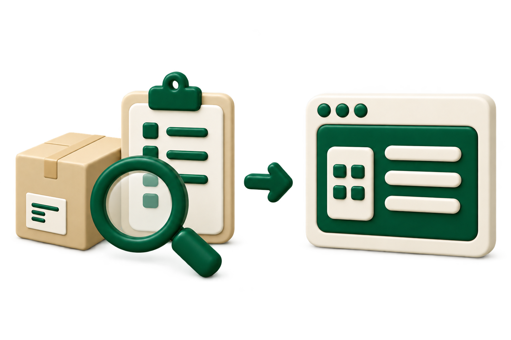
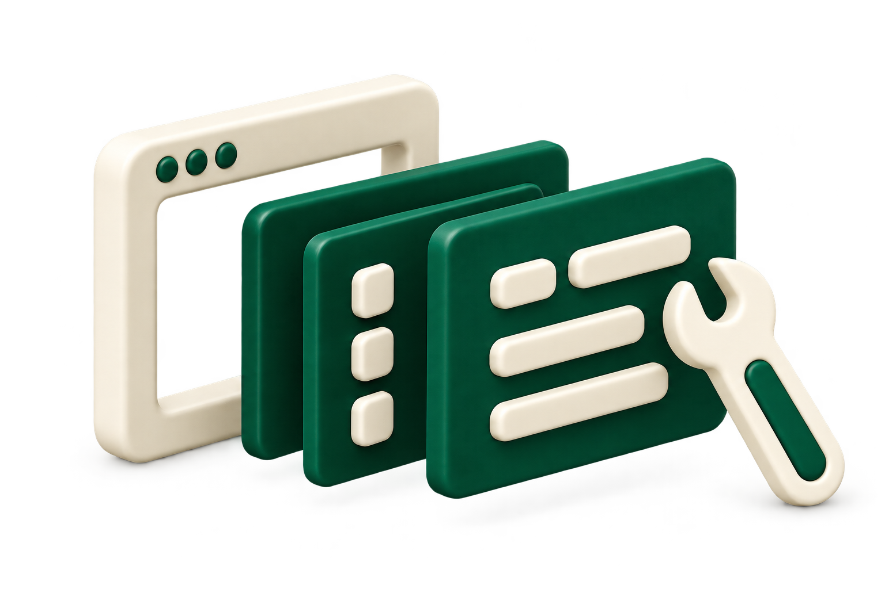
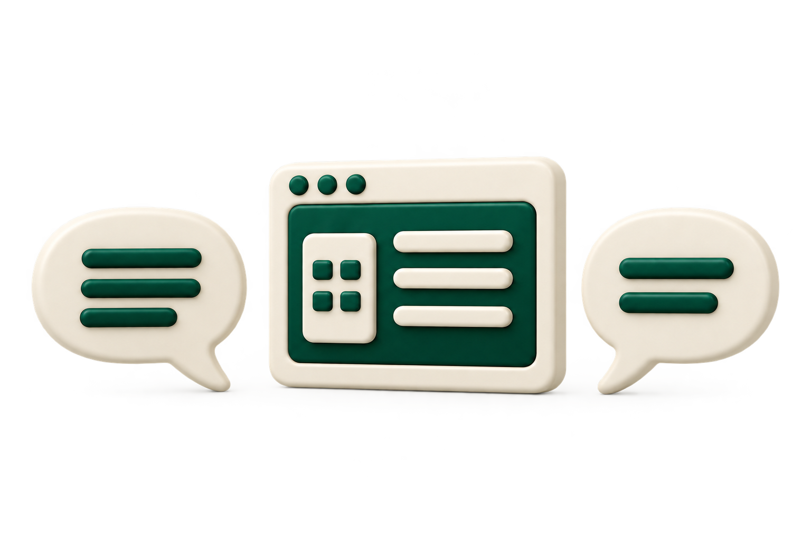

BAKED KALE / OUR GOALS
From the work you do.
To a system of your own.
Your company’s system. Yours to build on.
Baked Kale is building a place to start.
01 / What is FDE?
Understand the work.
Build what helps.
FDE stands for Forward Deployed Engineering: understanding how work happens on the ground, then turning that understanding into software that is useful there.
The starting point is the work, not the technology. Who does it? Where does time go? What gets in the way? Those questions guide a system people can keep using.

02 / What we do
A working system.
And the code behind it.
Business software should be easier to adopt. Baked Kale aims to lower that barrier by offering systems with their source code.
You do not have to start from zero, or reshape every process around an off-the-shelf tool. Start with a working system, understand how it works, and adapt it to your business. That is the choice we are building with IMS License Plus.

Understand what is behind the screen.
See the work happen in IMS.
Find a product, record a receipt, then check stock and history. This is the native application in development, operated with a separate synthetic dataset made for this capture.
A sequence captured from real development-build operations, not a concept animation or the Web Demo. Screens and behavior may change during development.
INSIDE IMS
Zero stock means out of stock. At or below the reorder threshold means low stock. With the source code, the rules behind these decisions are yours to understand.
Illustrative sample code, not the IMS implementation.The recording could not be played.
Read the sample code
// Illustration only — not IMS implementation code.
enum StockState { OutOfStock, LowStock, Healthy }
fn stock_state(quantity: i64, threshold: i64) -> StockState {
if quantity <= 0 {
StockState::OutOfStock
} else if quantity <= threshold {
StockState::LowStock
} else {
StockState::Healthy
}
}
struct StockItem {
name: String,
quantity: i64,
threshold: i64,
}
fn receive(item: &mut StockItem, quantity: i64) {
item.quantity += quantity;
}
fn main() {
let mut item = StockItem {
name: String::from("Sample product"),
quantity: 8,
threshold: 3,
};
receive(&mut item, 2);
let state = stock_state(item.quantity, item.threshold);
}
Read the operation sequence
- Find a product in the sample inventory.
- Choose the product and quantity, then record incoming stock.
- Check the updated stock level and operation history.
03 / Our goal
Your software people.
Your partner, for the long run.
Delivering a system should not be the end of the relationship. As your work changes and new improvements become necessary, we want to remain someone you can turn to.
A system you can understand and develop yourself. A partner you can talk to when you need one. Keeping both within reach is what Baked Kale aims for.

IMS is in development. The scope of implementation assistance, custom development and maintenance services is not yet defined. License Plus customers manage their own modifications, updates and security.